30秒卖出 32万枚鸡蛋社交电商独角兽转型精品会员电商2015 年，已有 12 年电商经验的肖尚略先生创立了云集。
云集平台用人与人间的信任连接了商品的供给与需求，在社交电商 2 . 0 时代重新定义了零售商与新零售，仅 3 年时间，云集就杀入了电商第一梯队，成为了社交电商独角兽企业。云集是一种全新的电商模式，阿里参谋长曾鸣把它称之为 S2B2C 模式。在云集，S 端（供应链）的商品， B 端（渠道商）的销售以及 C 端（消费者）的需求都被数字化呈现在了 APP 上；只要你有闲暇时间，你就可以注册云集店主，把云集谈好的品牌直供商品卖给身边的消费者。通过云集用户的推广与销售，云集创造了诸多奇迹：
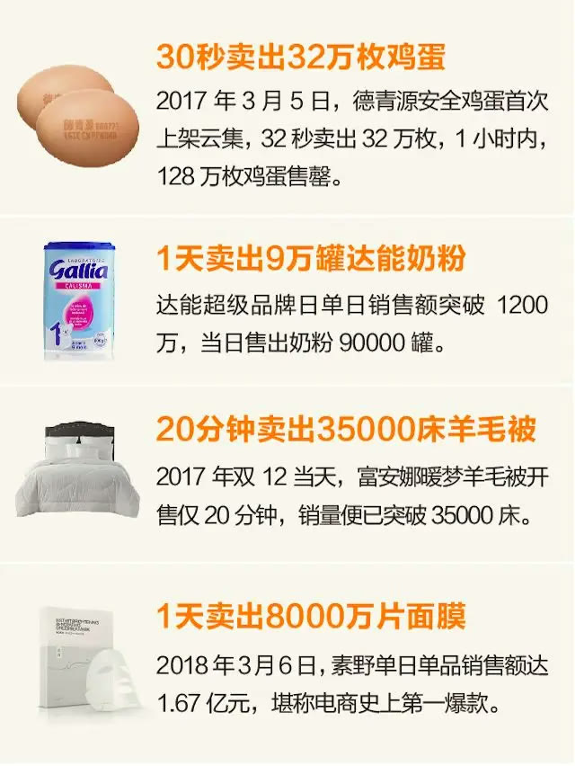
然而作为一种新型的互联网商业模式，云集也面临着一个严峻的问题，就是如何向普通大众说清楚“我是谁”。云集既是电商版的 Costco ，提供着会员电商的正品精品，也是社会化零售平台，为普罗大众提供了一个创业增收的机会。2018 年 4 月，云集找到了华与华，希望能找到一句话让所有人明白云集是什么。当时，在外部环境，云集面临电商业内的高强度竞争；在内部环境，云集正面临着自身定位、发展的抉择。在这 8 个月的合作中，华与华帮助云集做了 3 个关键动作：其一，重新创作了云集超级符号“小云鸡”的形象，使其成为云集最强势的品牌资产；其二，创造了云集“注册云集 APP ,购物享受批发价”的超级话语，解决云集传播的难题；其三，通过持续改善消费者的购物旅程，提升购买转化。针对云集内外部的战略问题，华与华与云集经多次商讨，确立了云集精品会员电商的定位，云集会员也翻了近 1 倍。在销售额上，云集也增速惊人， 2018 年双十一狂欢周云集销售额突破 25 . 9 亿，同比增长 160 % 。本文将围绕华与华品牌十六字咒：货架思维、购买理由、品牌寄生、超级符号，来讲解华与华是如何帮助云集迅速从竞争中突围，领跑会员电商。
2超级符号品牌角色成云集最强代言云集所处的互联网商业环境，竞争激烈，如果不能进入公众的第一视线，就只有被淘汰的命运。因此利用货架思维帮助云集成功突出竞争包围，是华与华和云集合作中最突出的成果。在梳理云集品牌资产的时候，我们发现云集有吉祥物——小云鸡，原来的小云鸡真的就是一只普通小鸡的形象，作为云集品牌资产的一部分却没有任何突出
的品牌特征。普通的小云鸡没有品牌特征，没有行业特征。在华与华，我们经常说超级符号不是普通的吉祥物，我们要做就做一只独一无二、非我莫属的鸡。
▲ 原版小云鸡玩偶，及手机壳周边
在重新设计小云鸡时，我们借助了品牌十六字咒中的货架思维、品牌寄生与超级符号的思想。我们先来说说超级符号与品牌寄生，在创作一个超级符号时，我们要去找到一个符号的文化原型，将品牌寄生到一个人类文化符号和仪式上去。移动电商在人们生活中的文化场景是什么？是人们下单后期待的等快递，是快递到手后兴高彩烈的拆快递。用一个最直接的符号表达就是——快递盒！快递盒不仅是云集电商属性的象征，也是云集的包装，是云集最大的自媒体，每个月有超过 1000 万个云集快递盒会送往全国各地。由此我们确立了云集超级角色“小云鸡”应当是一只当红“盒子鸡”。
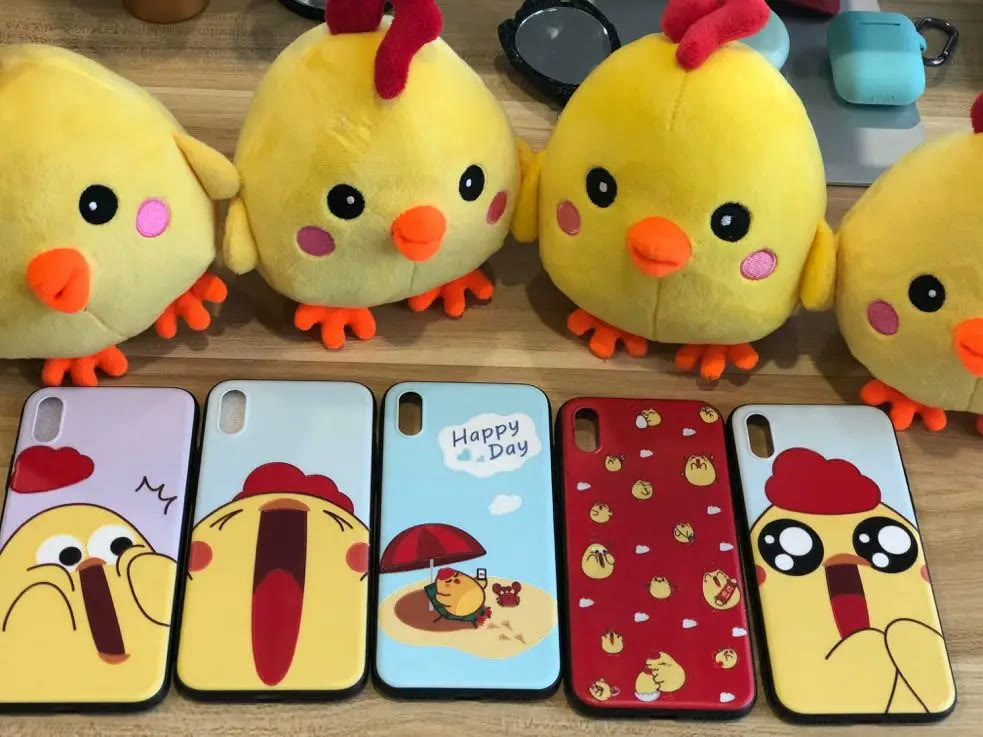
▲ 华与华设计的新版小云鸡
最后我们来看看什么是货架思维。货架有两个特征，第一货架充满了竞争对手的信息，第二货架是购买者会经过的地方，因此除了超市里那种传统货架，我们手机里也有虚拟货架，媒体也是货架。我们要随时思考从竞争的信息环境中跳脱出来，一眼进入消费者的选择队列。因此我们的小云鸡采用了明黄色，有着会说话的大眼睛和大大的品牌 LOGO ，不论在任何环境中都能一眼被识别，即使撕成碎片扔进垃圾箱也能被识别。
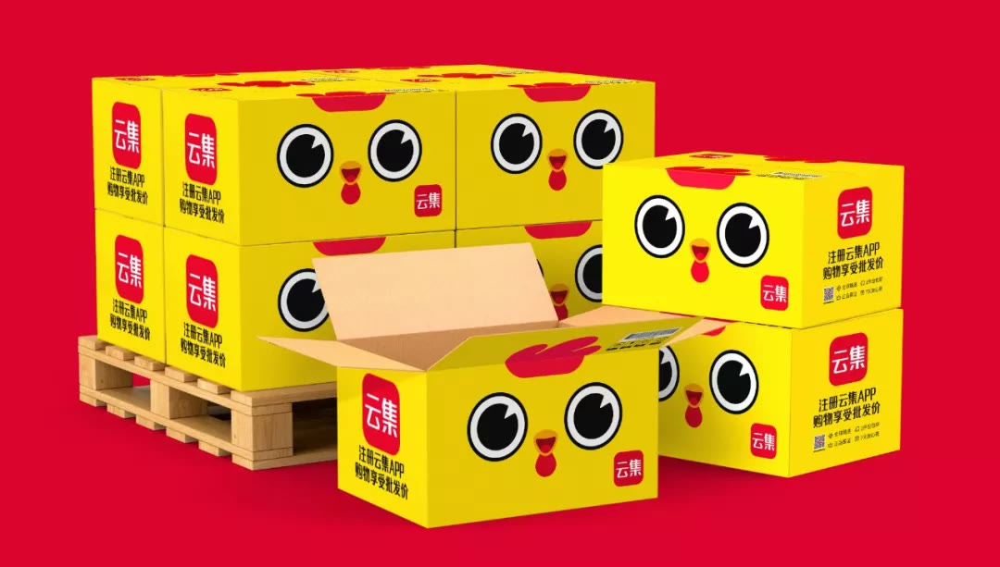
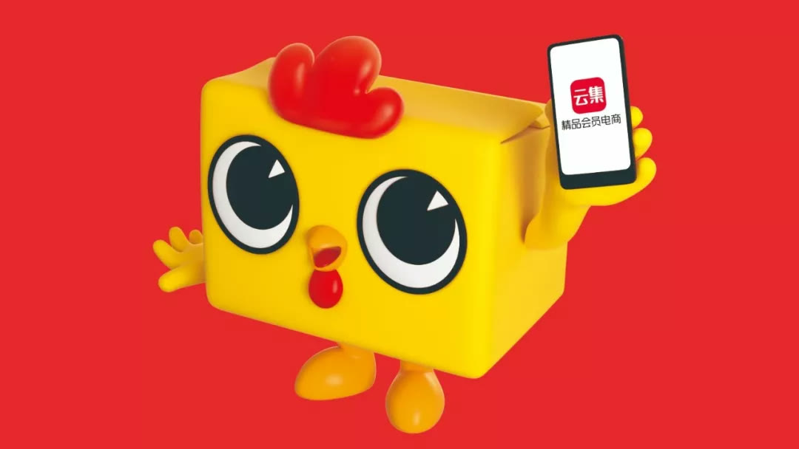
货架思维在云集竞争突围战中起到了非常大的效用，
在《南方都市报》的双十一报道中使用了一张物流照片，可以看到云集的小云鸡盒子成了绝对主角。
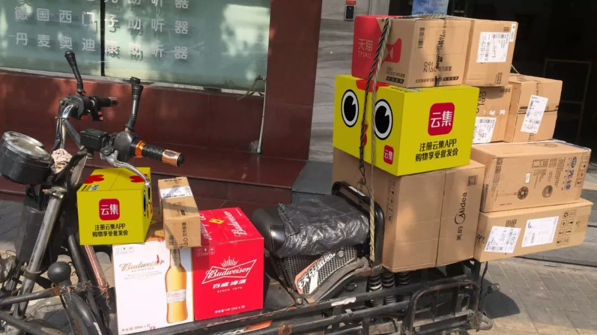
▲ 《南方都市报》双十一报道
超级口号与超级符号问世后，云集迅速进行了全面自媒体化：将小云鸡快递盒更新， APP 内交互更新，重新拍摄了 KV 海报，制作了小云鸡周边等。2018 年 10 月，云集还以小云鸡为原型在上海落地了一家大型快闪店。
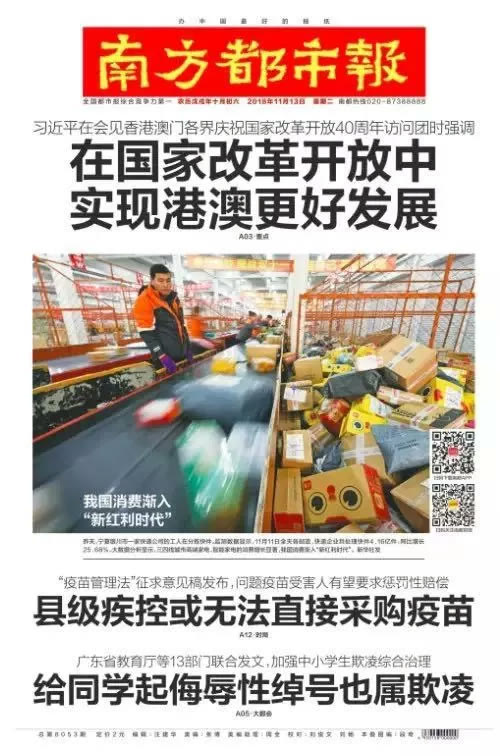
▲ 云集新品牌海报
▲ 小云鸡周边——拍照摆件
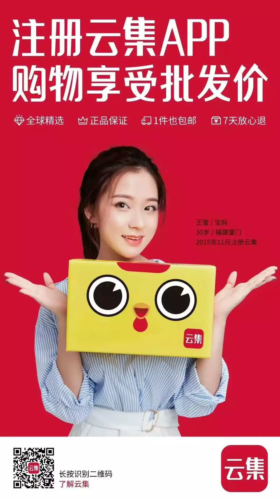
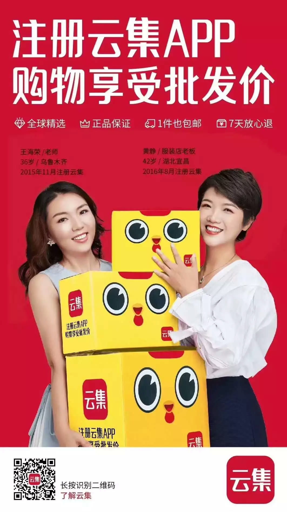
3超级口号回到品牌目的拉动云集生意什么是超级口号？一句说动消费者购买的话，就是品牌的超级口号！很多企业来找华与华时，都面临着和云集同样的困惑，就是感觉不能一句话说清自己的业务，传递出品牌的价值。其实给企业说十句话，可能也一样说不清企业的业务。华与华认为我们根本不需要“说清”自己，而要直接“说动”消费者，说清时主观的，说动是客观的。我们以为自己说清时，可能没说清，但说动消费者，就是让他们心动，最终落实到行动。让我们先来看看云集的这一句超级口号：
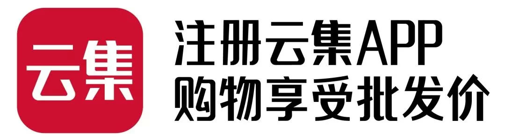
4持续改善购物旅程回到原点思考 刺激用户购买在与客户合作的过程中，我们要时常提醒自己，始终服务于最终目的，随时回到原点思考。我们为云集进行品牌升级时会时常问自己品牌的目的是什么。华与华的小伙伴们曾在内部培训上一起总结了品牌的 10 大目的。
我们会发现做品牌最基础的还是要刺激消费者的购买欲。
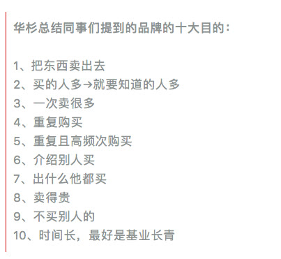
我们梳理了云集用户的整个行为路径，盘点出用户在云集的所有接触点，从各个节点上持续改善，提升消费者的购买可能。本节将主要讲解我们是如何通过购买理由的重新撰写与一个超级道具提升了云集的品牌效应。
▲ 云集的用户行为路径
用户在注册后作首先会浏览商品，此时他们会接触到商品列表页与商品详情页。云集原页面的购买理由不突出，产品名称规格比购买理由更加醒目，在此基础上我们放大了购买理由。产品与消费者之间是靠购买理由连接的，我们不要去研究消费者需求，而要给出打动消费者心理的购买理由。在创作购买理由时，我们使用了超级句式，直接下断言或使用消费者原话。
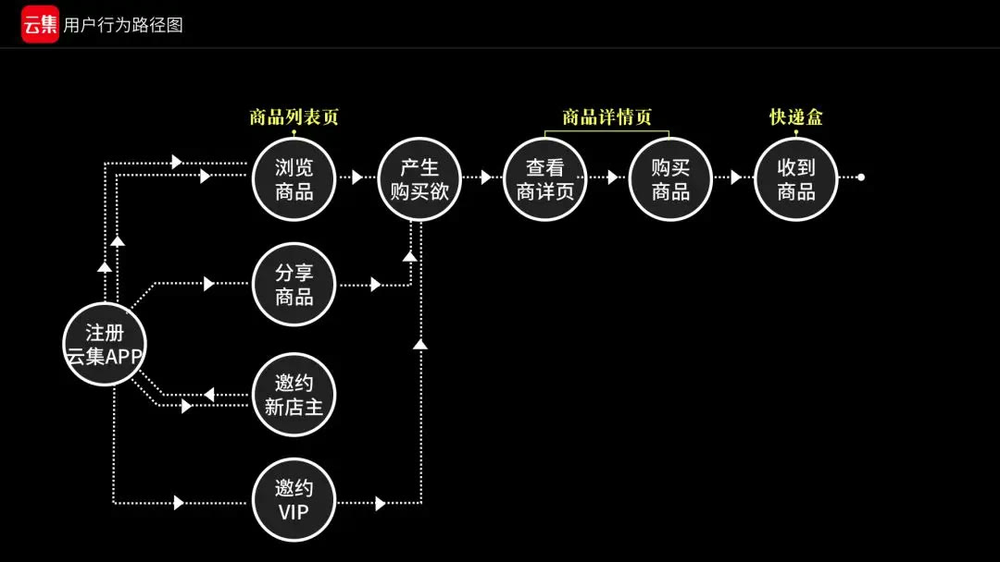
▲ 改善前
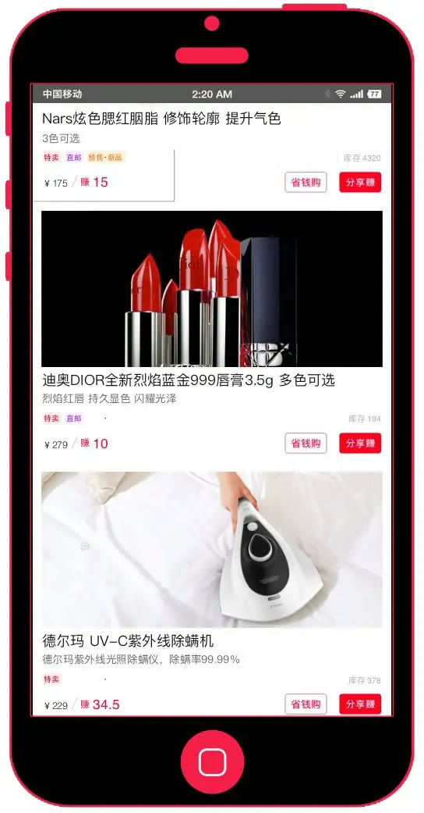
▲ 改善后
用户购买过商品后，我们回到原点思考，如何才能让更多的人重复购买？我们决定在 APP 外为消费者创造一个浏览商品的机会——随箱附赠邮购目录。我们像超市一样在箱子内放上了特惠商品的二折页，吸引二次购买。宜家就曾依靠每年在中国免费发放 3500 万册邮购目录，成功将客户拥有率从以前的 40 %上升到现在的 80 %。
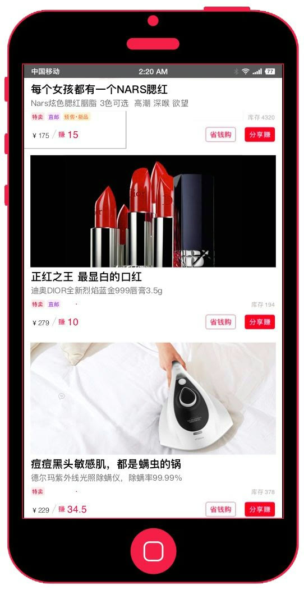
▲ 云集邮购目录 1 . 0
在邮购目录的细节上，我们打造了一个信息“炸药包”为消费者提供决策信息，催促他们快点行动。这个信息“炸药包”包含商品图（有图有真相）、价格（特卖是欲望的勾子）、购买理由（产品本身是最大的购买理由）、产品名和购买指令（下达购买行为的指令）。
此外，消费者是茫然的，我们不仅要提供购买理由，下达购买指令，还要给他们一个购买指南，因此我们设计了五类推荐图标，指引消费者加速购买。
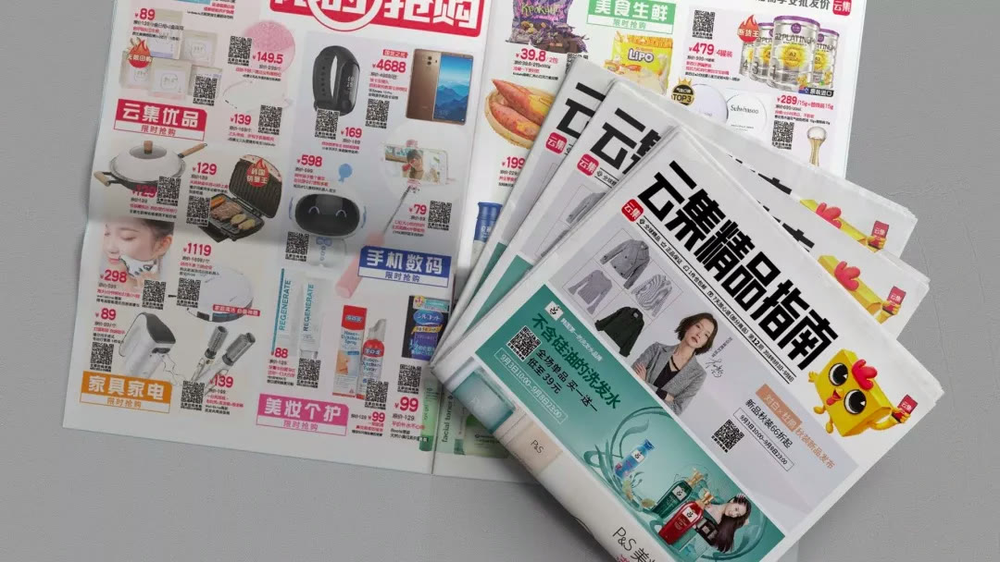
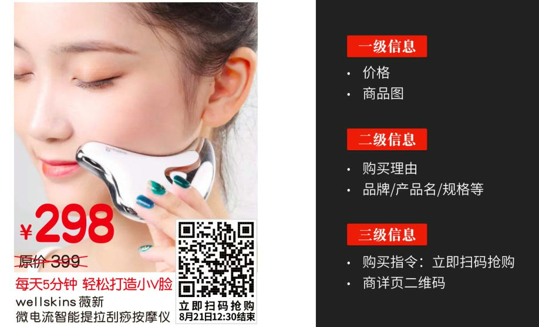
在双十一预热期间，云集邮购目录为云集带来了 1 . 46 万单预售成交量，相信我们持续改善的邮购目录 2 . 0 会取得更好的成绩。
▲ 云集邮购目录购买推荐图标设计
5云集+华与华电商赛道加速前进云集是华与华合作过的超优质客户之一，拥有着相同的价值观和超强的执行能力。云集和华与华都相信企业应当承担某一社会责任，解决某一社会问题，为社会制定企业战略。云集创立之初就以“让买卖更简单，让生活更美好”为使命，致力于赋能普通人创业增收和消费升级。其企业战略与华与华认同的德鲁克企业的社会职能原理不谋而合。在合作中，华与华与云集高度契合，完整执行了所有方案。6 月份，华与华为云集提出了超级话语与超级符号两大品牌资产， 8 月 15 日云集就召开了品牌升级发布会，全面更新品牌形象。 9 月份华与华为云集提出了持续改善购物旅程，双十一前所有改善均完成落地。
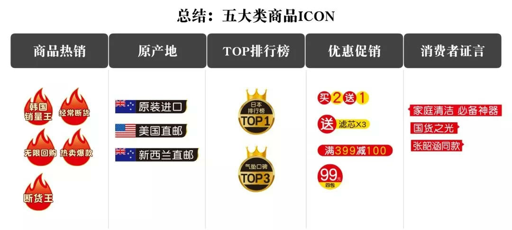
▲ 云集品牌升级发布会
从 2017 年到 2018 年， 云集完成了品牌升级、战略转型，会员数成长近 1 倍，销售总额也再创新高。2019 年，华与华还将继续从战略咨询、产品开发、广告营销三个维度与云集一起探索精品会员电商的经营之道。愿我们共同成长，共同进步。
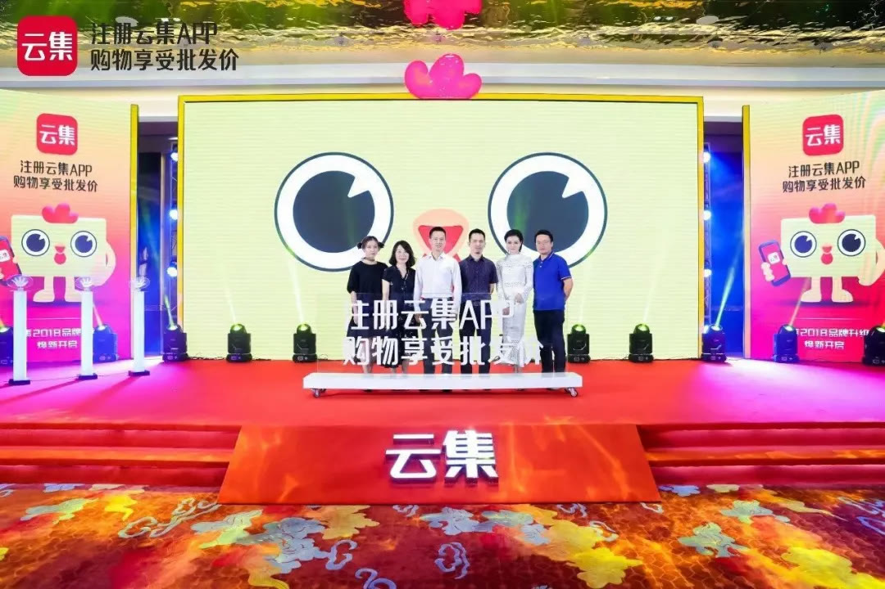